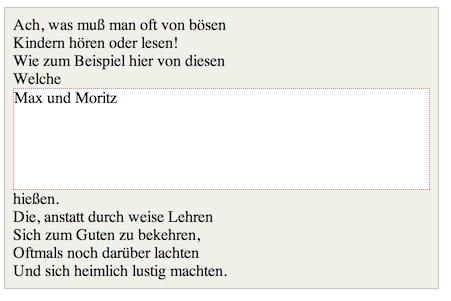
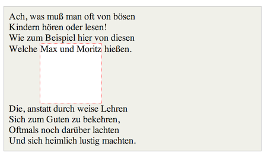

What is the difference between inline and inline blocks?

Inline and inline-block are both values of the display property. This specifies how exactly is an element is displayed. Most elements in html are displayed as either inline, inline-block or block by default. But these are able to be easily changed with the property display and then with your chosen value of inline and inline-block, among others. I'll explain what each of them are exactly and give examples below.
display: inline;
The element doesn’t start on a new line and will only occupy just the width it requires. You can’t set the width or height values.
The example below shows how the element fits inline with the flow of the text aswell as how it doesn’t take up any extra space and the text can continue again on the same line

display: block;
Block is another common display value so I thought it would be worth it to include it in this. The element will start on a new line and occupy the full width available and you can set width and height values.
The example below shows how the element doesn’t fit inline with the flow of the text aswell as how it takes up a block of a few extra lines before the text can continue again.
display: inline-block;
Well inline-block, like it's name, is both the above display types. It’s displayed exactly like the inline display, where it doesn’t start on a new line. But, like the block display, you can set the width and height values.
The example below shows how the element fits inline with the flow of the text aswell as how it takes up a block of a few extra lines before the text continues again.
